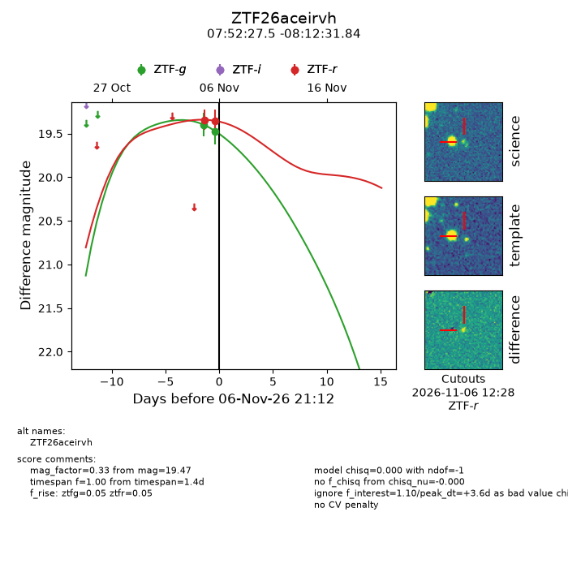
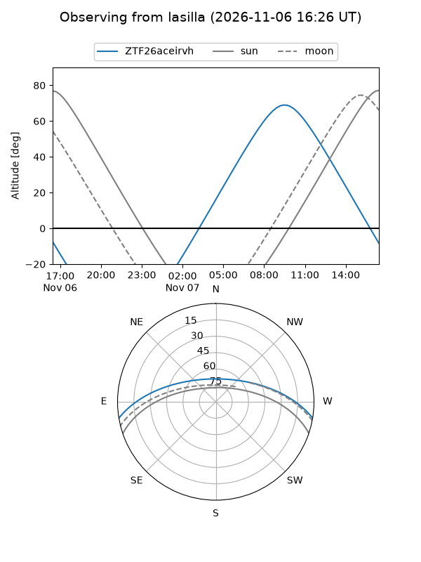
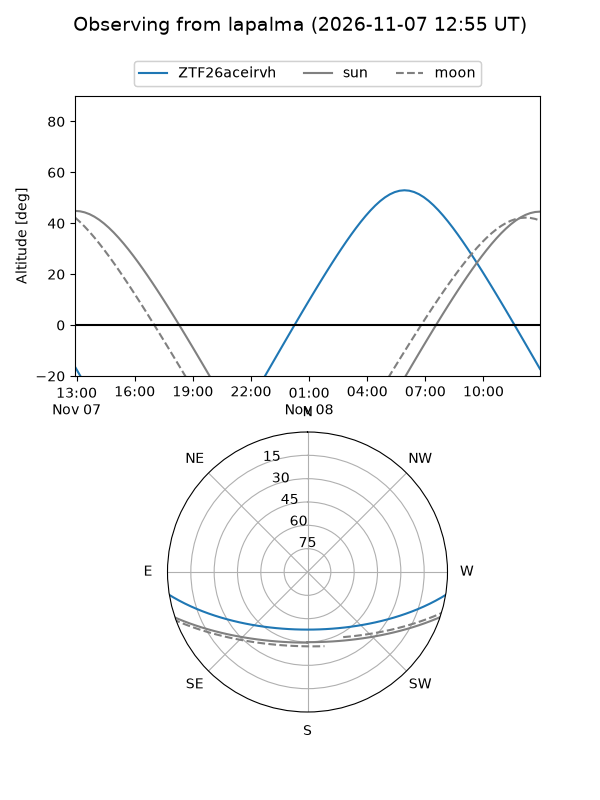
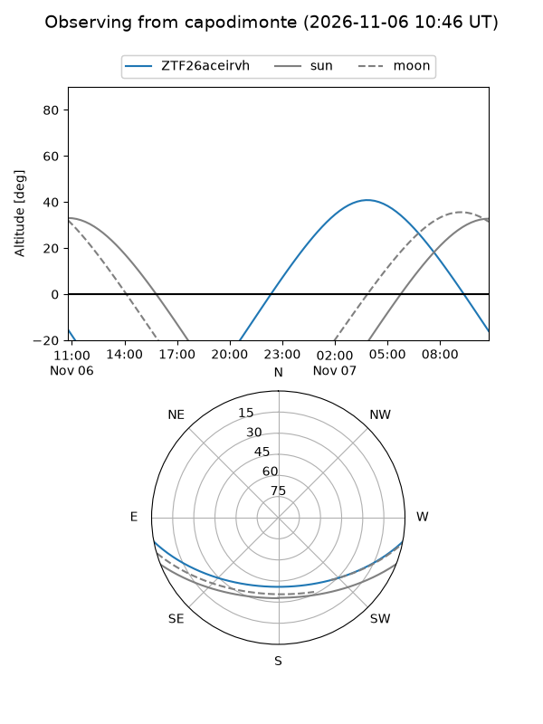
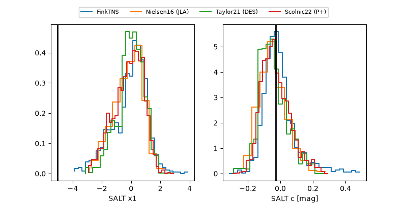

ZTF26aceirvh
Target ZTF26aceirvh at 2026-11-06 21:14
Aliases and brokers:
FINK-ZTF: ztf.fink-portal.org/ZTF26aceirvh
Lasair-ZTF: lasair-ztf.lsst.ac.uk/objects/ZTF26aceirvh
ALeRCE-ZTF: alerce.online/object/ZTF26aceirvh
Direct TNS query: direct search
alt names
ZTF26aceirvh (ztf,fink_ztf)
Coordinates:
equatorial (ra, dec) = 118.1145,-8.20885
equatorial (HMS+DMS) = 07:52:27.49,-08:12:31.84
galactic (l, b) = (227.3685,+9.59398)
Flags:
peak dt: +3.6
Photometry:
last ztfg=19.47, ztfr=19.35
2 ztfg, 2 ztfr detections
Lightcurve

Visibility



Additional plots
